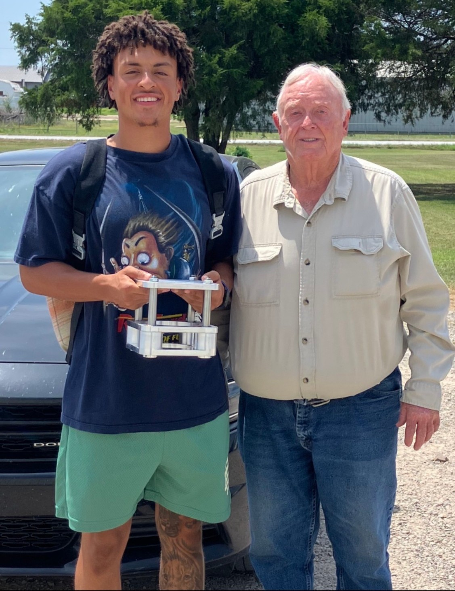

Larry Armstrong, inventor, of Eufaula, Oklahoma, spent a career building machines and asked a question the industry had stopped asking: why does every spring give its energy back? The answer became the Armstrong Gate.
Avery Armstrong, Duke University, co-founded Armstrong Kinetic Solutions to carry the patent from drawings to hardware, with Duke's labs as the proving ground.
Pictured: Avery and Larry with the first machined Gate frame, summer 2025.
We are a family company building for the whole world. Come find us at the poster; we would love your questions, your skepticism, and your help.